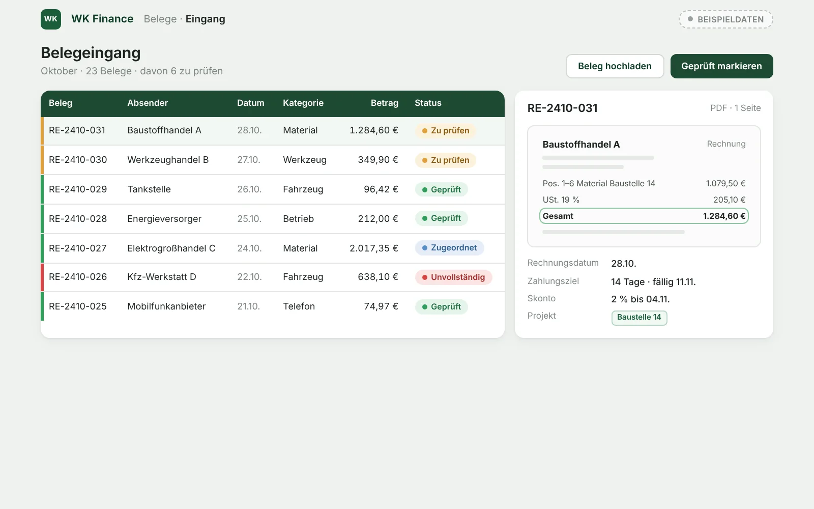
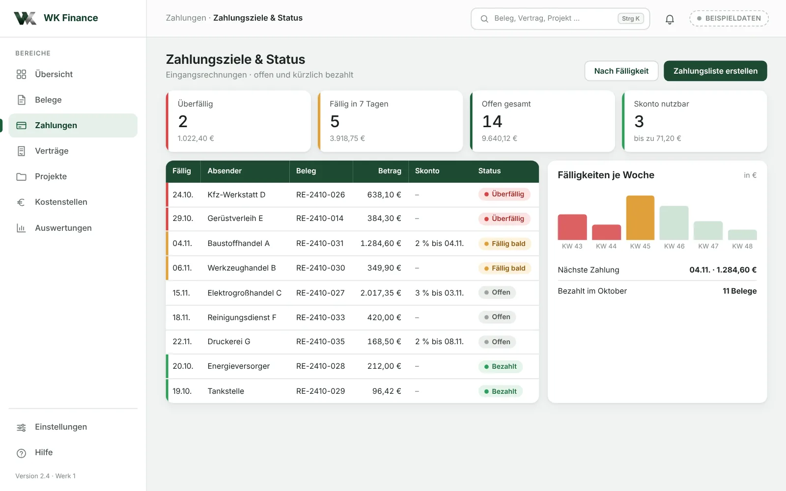
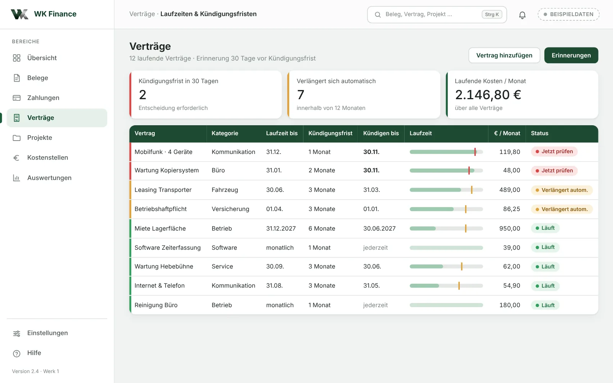
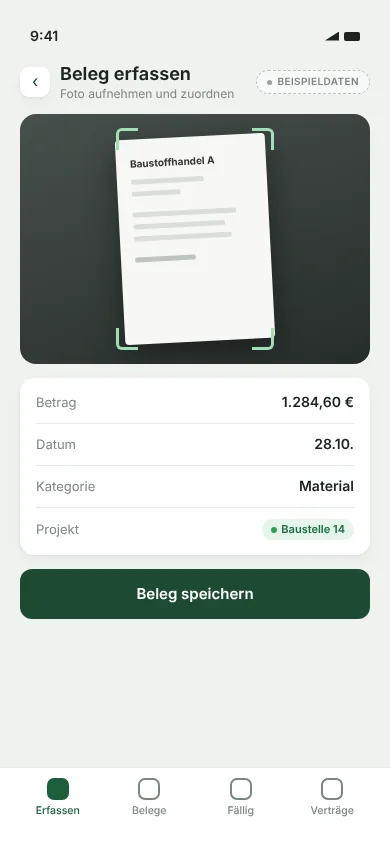

WK Finance · Für Handwerk und kleine Unternehmen
Belege, Zahlungen und Verträge im Griff.
Rechnungen sammeln sich im Fahrzeug, Zahlungsziele und Kündigungsfristen gehen im Tagesgeschäft unter. WK Finance hält das Kaufmännische übersichtlich an einem Ort – ohne Buchhaltungsballast.
- Status
- Web: noch festzulegen
- iOS: Geplant
- Android: Geplant
Kaufmännisch den Überblick behalten
Was ist offen, was ist fällig, was läuft aus?
Belegeingang mit Prüfstatus, Zahlungsziele nach Fälligkeit und Verträge mit Kündigungsfristen – drei Fragen, die im Betrieb täglich auftauchen.
- Belege direkt einem Projekt oder einer Baustelle zuordnen
- Fälligkeiten und Skontofristen rechtzeitig sehen
- Kündigungsfristen nicht mehr verpassen



Konzeptansicht mit Beispieldaten.
- Belege
- Zahlungsziele
- Zahlungsstatus
- Verträge
- Kosten
Funktionen
Das Kaufmännische, das im Betrieb anfällt.
WK Finance ist für den Alltag kleiner Betriebe gedacht: schnell erfasst, klar sortiert, rechtzeitig erinnert.
Rechnungen & Belege
Eingangsrechnungen und Belege sammeln, prüfen und Projekten, Baustellen oder Kostenarten zuordnen.
Zahlungsziele
Fälligkeiten und Skontofristen nach Datum sortiert – überfällige Posten fallen sofort auf.
Zahlungsstatus
Offen, fällig, bezahlt: der Stand jeder Rechnung auf einen Blick.
Verträge & Fristen
Laufzeiten, Kündigungsfristen und automatische Verlängerungen mit Erinnerung vor Fristablauf.
Kostenübersicht
Laufende Kosten je Kategorie und Monat – als Überblick, nicht als Buchhaltung.
Dokumentenablage
Belege und Verträge geordnet abgelegt und wiederauffindbar.
WK Finance ersetzt keine Steuerberatung und keine Finanzbuchhaltung. Es ergänzt beides um Ordnung und Überblick im Betrieb.
Mobile Version
Beleg fotografieren, bevor er verloren geht.
Die Tankquittung, der Lieferschein vom Baustoffhandel, die Rechnung aus der Werkstatt: Unterwegs reicht ein Foto und eine Zuordnung – der Rest passiert später am Schreibtisch.
- Beleg fotografieren und Betrag erfassen
- Projekt oder Baustelle direkt zuordnen
- Fälligkeiten unterwegs einsehen
Mobile Version: Geplant

Zusammenspiel
Eigenständig nutzbar. Gut kombinierbar.
WK Finance ist der kaufmännische Teil der Produktfamilie. Es funktioniert allein – und passt zu Betrieben, die auch Material oder Aufträge digital führen.
Lassen Sie uns ins Gespräch kommen
Wo geht in Ihrem Betrieb Papier verloren?
Erzählen Sie uns, wie Belege, Rechnungen und Verträge heute bei Ihnen laufen. Wir prüfen, was sich mit wenig Aufwand vereinfachen lässt.
- Telefon+49 160 277 65 12
- E-Mailservice@werringloer.de
- StandortPeetzweg 46, 38228 Salzgitter